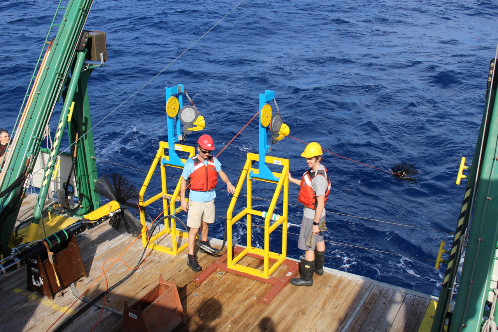

UoS Ocean Dynamics and Mixing
The Ocean Dynamics and Mixing group at the University of Southampton is comprised of faculty, postdoctoral fellows and students. The focus of our group is on ocean observations with the aim of understanding these measurements and comparing with theoretical understandings of the ocean.In these webpages, you'll find an overview of our research, biographical sketches of members of our group, recent publications and additional links you might find helpful.

Eleanor Frajka-Williams is an associate professor of physical oceanography at the University of Southampton.
Alberto Naveira Garabato is a professor of physical oceanography at the University of Southampton.